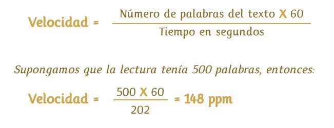

APRECIADO LECTOR:
Así como para el pintor enfrentarse a un lienzo en blanco es un reto, o para el escritor plasmar la primera letra en el papel representa el principio de una hermosa obra, para nosotros, este primer contacto contigo es una gran oportunidad: Hoy se abre la puerta para entrar a un mundo nuevo de conocimiento en el que tu recorrerás con nosotros un camino de aprendizaje que te llevará a convertirte en un Lector Avanzado.
Estamos ansiosos de que empieces a explorar nuestras páginas, a descubrir en cada una de ellas las técnicas, recomendaciones y ejercicios que durante meses nuestro equipo de trabajo estuvo preparando con gran dedicación para entregarte lo mejor de nuestra experiencia. Esta obra comenzó con un papel en blanco, hasta convertirse en un verdadero avan-c que cobra sentido en este momento, justo cuando tus ojos y tu mente empiezan a recorrer lo que hay guardado en cada línea. La meta: lograr que conozcas el mundo de la lectura avanzada y lo tengas siempre en la cabeza y en tus manos, como una fortaleza que te ayudará a abrir nuevas posibilidades en un medio que cada vez nos exige más y más.
Avan-c, Sistema de Lectura Avanzada, reúne años de investigación, de los cuales hemos rescatado y perfeccionado las mejores técnicas, adicionando nuestro propio conocimiento, es decir, está enriquecido frente a muchas otras alternativas, con el aporte de un equipo joven e interdisciplinario de alta competencia en los campos de psicología, pedagogía, lectura, escritura,ingeniería, diseño entre otras.
Debemos, sin embargo, reconocer la destacada tarea de los hombres y mujeres que durante muchos años estudiaron el comportamiento del ser humano en su proceso lector. Partimos de toda experiencia que sin duda le otorga un valor agregado a la nuestra. Por eso, a continuación te invitamos a iniciar nuestro recorrido por el mundo de la lectura avanzada conociendo cómo empezó el hombre a inquietarse por la lectura, para indagar después los fundamentos de la Lectura Rápida mediante un breve viaje por la historia. Esperamos que te deleites con cada página, que puedas medir tu propio avan-c y disfrutar al máximo el aprendizaje
¡Acompáñanos!El Pasado
Aunque no podemos conocer con precisión el momento en que el hombre fue consciente de su capacidad para comunicarse, establecer relaciones y ser por lo tanto un ser sociable, sí sabemos que ese hallazgo comenzó con su propio cuerpo y luego, a través de signos y señales. Después se dio cuenta de que podía expresar sus sentimientos, conocimientos, necesidades y percepciones mediante la pintura.
Así pasarían varios siglos en los que poco a poco iba perfeccionando su proceso de comunicación hasta que el descubrimiento de la tinta por civilizaciones con alto grado de desarrollo para su época, como la egipcia, griega y romana hizo posible que el hombre ilustrara sus creaciones, convirtiéndolas en libros rudimentarios que fueron escritos con pluma o pincel.
Sin embargo, en el año 960, un gran descubrimiento partiría la evolución del hombre en dos: la invención de la imprenta en China; pero fue Johannes Gutenberg quien daría un giro importante al romper los esquemas perfeccionando la imprenta e inventando una tinta que permitía la impresión del papel por las dos caras.
La imprenta abrió fronteras y mentes, gracias a que los libros empezaron a hablar de paisajes remotos y lugares maravillosos, de creencias y culturas diferentes, de mitos y dioses. Desde entonces, los libros han sido y seguirán siendo el mejor instrumento con que cuenta la humanidad para descubrir, enriquecer su conocimiento y, en pocas palabras, progresar.
Pero con el correr del tiempo, los adelantos tecnológicos y el flujo de información, las necesidades del hombre cambiaron; ya no fue suficiente aprender a leer. La misma evolución del mundo le exigía mayor destreza en la lectura, entendida como la capacidad para comprender mejor y a más velocidad todo aquello que leía, bien fuera por placer, estudio o negocios.
De esta manera, desde el siglo XIX se desarrollaron en diferentes lugares del mundo, investigaciones que permitieron encontrar nuevos sistemas que superaran el simple acto de leer para darle velocidad y calidad. Hemos preparado una pequeña cronología que te va a facilitar comprender cómo hemos alcanzado el avance que hoy hace parte de nuestro proceso de formación y creacimiento. Veamos
Cronología:
La historia de la lectura rápida comienza en 1878 cuando Louis Émile Javal, ingeniero y oftalmólogo francés, registra el movimiento de los ojos durante la lectura, descubre que los ojos se mueven en series de saltos a los que denomina “sacaddes” y que también realizan pausas o “fijaciones”, deteniéndose en promedio tres o cuatro veces mientras leen una línea de texto.
Solo en ese momento, es decir, cuando el ojo está quieto, es capaz de reconocer una palabra. Así, las fijaciones son el primer fundamento fisiológico para entender por qué podemos trabajar para lograr una Lectura Rápida.
Antes del trabajo de Javal se creía que los ojos se detenían en cada letra o al menos en cada palabra cuando intentaba leer. Su descubrimiento fue básico porque demostró que nuestro campo de lectura (número de caracteres que los ojos pueden reconocer en cada vistazo) es más amplio de lo imaginado
Años más tarde, entre 1885 y 1886, James McKeen Cattell inventa el taquistoscopio, palabra compuesta -
etimológicamente por el vocablo takhistos,que significa el más veloz y por scopein, que quiere decir “ver”. El taquistoscopio, instrumento sumamente útil hasta nuestros días, fue diseñado para exponer al ojo imágenes o palabras por breves espacios de tiempo.
McKeen Cattell expuso las imágenes en su taquistoscopio durante 10 milésimas de segundo, encontrando que, en la primera vez podía captar o percibir de forma exacta entre tres y cuatro letras aleatorias y de seis a ocho letras si formaban una palabra
Descubrió que es más fácil percibir palabras completas con sentido, que letras aisladas o palabras cuyas letras estuvieran en desorden y concluyó que para que la lectura sea más eficaz se debe leer por frases y no letra por letra o palabra por palabra
En 1894, se publicaron algunos artículos en revistas como Educational Review que hablaban acerca de las ventajas y los más recientes métodos creados en la época para acceder a la lectura rápida.
En 1897, Edmund Burke Huey de la universidad de Clark, Estados Unidos, desarrolla un aparato para grabar los movimientos del ojo con el fin de realizar un análisis posterior. Cualquier movimiento del ojo trazaba un patrón en la superficie de una lámina de papel, permitiendo observar descripciones más precisas de los movimientos de la naturaleza ocular que las realizadas mediante observaciones directas.
Entre 1898 y 1901 Raymond Dogde diseña la primera cámara para grabar los movimientos oculares usando fotografía de reflexión en la córnea. Con esta cámara se obtuvo la primera fotografía del movimiento del ojo durante la lectura y fue la base para estudios posteriores. A partir de entonces se desarrolla un gran deseo en la educación pública masiva americana para acelerar y mejorar la velocidad de la lectura. Y desde el año 1925 se hizo evidente la preocupación por incrementar sistemáticamente las velocidades de lectura, cuando la Universidad de Siracusa en los Estados Unidos crea el primer curso de lectura rápida.
A partir de año 1940 se empieza a utilizar en Europa y Estados Unidos el taquistoscopio en las pruebas para pilotos de aviones en combate.
Los estrategas evaluadores notaron que algunos pilotos tenían dificultad para distinguir a distancias largas los aviones cazabombarderos. El experimento consistía en mostrar aviones en pantalla durante pocos segundos para adiestrar sus ojos y mejorar la agudeza visual al distinguirlos. Gradualmente se les aumentaba la cantidad de imágenes proyectadas, se les disminuía el tamaño de ellas y se reducía el tiempo de exposición.
Los investigadores encontraron que una persona normal, entrenada previamente, podía identificar imágenes minúsculas de aviones de combate desde diferentes ángulos y a grandes velocidades cuando titilaban en una pantalla. Esto demostró a su vez, que las velocidades de lectura podían ser incrementadas y además se podía mejorar la agudeza visual. Por lo tanto, el siguiente paso fue incorporar el taquistoscopio a los cursos de lectura rápida, proyectando varias palabras consecutivas para lograr el entrenamiento ocular por medio de diversas técnicas. Los psicólogos y educadores que trabajaban en la agudeza visual, diseñaron entonces un taquistoscopio aún más refinado que se convertiría en el ícono de los primeros cursos de lectura veloz.
Los descubrimientos realizados fueron “sorprendentes”: usando el taquistoscopio durante varios días de entrenamiento, las personas eran capaces de incrementar la velocidad de lectura. La desventaja: si se usaba solo este método, las personas tendían a volver a su lectura habitual, por lo que era necesario continuar perfeccionando el uso de esa herramienta junto con otras técnicas.
Luego de los descubrimientos con el taquistoscopio, la escuela de negocios de la Universidad de Harvard, produjo el primer curso asistido por video diseñado para ampliar el campo visual de lectura.
En los años 50, Evelyn Wood, maestra de secundaria apasionada por la lectura, descubre accidentalmente que además del taquistoscopio y las ayudas fílmicas, la mano podía ser usada como elemento acelerador. Estaba empeñada en entender por qué algunas personas eran lectores rápidos naturales y estuvo intentando forzarse a sí misma para leer rápidamente. Mientras limpiaba las páginas de un libro que había tirado desesperada por no conseguirlo, se dio cuenta que mientras deslizaba su mano a través de la página, esta le ayudaba a captar la atención de -
sus ojos y a moverse más suave y rápidamente. Wood diseña así una metodología, donde incluye nuevos elementos pedagógicos y su programa gana amplia popularidad entre los anglosajones.
En los años 60, 70 y 90, se involucran técnicas para mejorar la concentración en la lectura y la retención de lo leído. Se hace énfasis en la lectura eficiente y ayudas para mejorar la retención como los ideogramas o mapas conceptuales.
En la década de los años 90, la utilización masiva de la computadora permite diseñar programas de ayuda para acelerar la lectura mediante taquistoscopios más versátiles y cómodos de usar. Al mismo tiempo. Los avances en el estudio del cerebro permiten mejorar los métodos de aprendizaje donde la lectura rápida es una herramienta importante. Se hace énfasis en la visualización de ideas y conceptos, además de los estímulos ambientales que faciliten la concentración.
Famosos Lectores Rapidos
Ahora que ya conocemos el valioso trabajo que precedió nuestro avan-c, estamos listos para conocer algunos ejemplos de personas que muy seguramente empezaron como tú: solo con la firme decisión de salir adelante, imponerse un reto y cumplir una meta. Y ¿en qué forma lo lograron? Son personajes que han marcado la historia. Así como ellos, tú también puedes hacerlo. Emocionante ¿verdad?
John F. Kennedy. Ex-presidente de los Estados Unidos y uno de los más conocidos lectores veloces de la historia, usó sus capacidades durante sus campañas y publicitó el hecho de que había estudiado lectura rápida. Comenzó leyendo solo 280 palabras por minuto (una velocidad dentro del rango de cualquier persona) y luego de su entrenamiento fue capaz de leer miles de palabras por minuto.
Theodore Roosevelt. Ex-presidente de los Estados Unidos. Se hizo famoso por su costumbre de leer un libro antes del desayuno y ocasionalmente tres libros por día. Era conocido como un lector rápido y un crítico incansable. Su habilidad no se limitaba a leer rápidamente, sino también a anticiparse y
decidir cuándo y cómo debía leer su material. Pasó de ser un lector promedio a leer por párrafos en una sola fijación.
Howard Stephen Berg. Biólogo alemán, ganador del premio Guinness Récord en 1990 como el lector más rápido del mundo, por ser capaz de leer 25.000 palabras por minuto.
Thomas Jefferson. Tercer presidente de los Estados Unidos y principal autor de la Declaración de la Independencia, fue muy disciplinado en la lectura, abarcaba muchos temas para ampliar su conocimiento o por simple ocio.
Acostumbraba a hacer listas de libros para ser leídos en ciertas horas según el propósito. Usaba siempre un reloj para cronometrar y guiar su tiempo de lectura. Un relato dice que a pesar de que su lectura era muy rápida, su comprensión era detallada e incluso majestuosa.
Una aproximación a la lectura avanzada
Aunque hasta este punto hemos mencionado cómo el hombre ha tomado conciencia de la importancia de saber leer bien, creemos conveniente que conozcas la diferencia entre una lectura normal y una lectura avanzada, es decir, la que caracteriza la técnica de avan-c.
En el mercado existen actualmente múltiples opciones para mejorar los procesos de lectura que van desde libros, hasta ofertas en internet. Todas destacan como eje de su gestión la velocidad que alcanzarás en poco tiempo. Pero en realidad, la lectura avanzada va mucho más allá:
Primero, es necesario “aprender a desaprender”. Sí, así como lo oyes: a lo largo de nuestra vida y debido al sistema de enseñanza de la mayoría de los colegios, aprendimos a leer letra por letra, sílaba por sílaba y palabra por palabra, lo cual, si bien logra el objetivo, hace que nos llenemos de malos hábitos que describiremos posteriormente y que debemos erradicar. No te preocupes, es posible y menos complicado de lo que parece. Segundo: leer avanzadamente dista bastante de leer a toda velocidad. Ese es apenas uno de los propósitos, que no se logra en un par de semanas
y que debe estar acompañado de dos conceptos muy importantes: comprensión y retención. En palabras más simples, la meta es: leer rápido, entendiendo, memorizando y además adquirir destreza para seleccionar lo que leemos de acuerdo con el propósito que buscamos. Con avan-c todo es factible: basta seguir paso a paso las instrucciones, conocimientos y ejercicios que te proporcionáremos en el tiempo justo y con el método adecuado
La meta es: leer rápido, entendiendo, memorizando y además adquirir destreza para seleccionar lo que leemos de acuerdo con el propósito que buscamos.
¿Por qué es necesaria la Lectura Avanzada?
Ubiquémonos en las actividades que desarrollamos en un día normal: nos enteramos de las noticias más importantes a través de los diarios o las revistas; los niños y jóvenes asisten a sus centros de formación, abren su cuaderno o su libro y se disponen a aprender. En la oficina preparamos con lujo de detalle la exposición para ganar un nuevo negocio, o probablemente consultemos nuestro mail para estar al día de lo que ocurre con nuestra competencia, o tal vez, para responder un mensaje de nuestra familia o amigos en otro país.
¿Cuál es el acto común? Leer, sin duda, pero además comprender rápidamente y seguir adelante, viviendo a velocidades de las que tal vez no somos muy conscientes.
Ahora bien: aunque en las pruebas académicas y laborales no existe jamás una pregunta concreta en torno a: ¿sabes leer bien?, o quizá ¿cuántas palabras lees por minuto?, es evidente que quienes obtienen mejores resultados siempre son aquellos que lograron entender las instrucciones o responder la solicitud de su entrevistador a la mayor velocidad y precisión posible.
¿Cuántos de nosotros hemos recorrido las páginas de un libro, un texto de estudio o relacionado con nuestra actividad profesional, sin que al final podamos recordar lo más importante? ¿No es cierto que aunque en ocasiones releamos varias veces un texto no conseguimos memorizarlo?
No importa la edad, el lugar donde vivamos o la actividad a la que dediquemos nuestro tiempo, la lectura avanzada es una gran aliada para desenvolvernos exitosamente en la época que estamos viviendo, caracterizada por la falta de tiempo, la velocidad de la información y la competitividad.
Para avan-c tus metas y expectativas son nuestro punto de partida, y ayudarte a cumplirlas, nuestro gran reto.
Nuestros objetivos, tu mejor garantía
Nuestro equipo ha aportado lo mejor de su conocimiento, para que con avan-c tu puedas cumplir los siguientes objetivos:
1. Incrementar tu capacidad de atención y concentración.
2. Aumentar tu velocidad de lectura en forma progresiva. Aquí no hay magia, ni trucos especiales. La velocidad depende de la rigurosidad y constancia con la que realices los ejercicios. A cambio, los beneficios serán palpables:
- Lograrás el control de los músculos oculares para producir movimientos ágiles y precisos.
- Ampliarás tu campo visual para la lectura.
- Eliminarás malos hábitos como las regresiones y la subvocalización.
- Incrementarás gradualmente tu velocidad.
- Flexibilizarás tu velocidad de lectura según el tipo de texto que vayas a leer.
3. Desarrollarás habilidades de comprensión y retención. En pocas palabras tu conseguirás:
- Entender la totalidad de lo leído.
- Asociar los nuevos conocimientos con los que ya conoces y podrás interpretarlos más fácilmente.
- Producir nuevas ideas y generar opiniones.
- Seleccionar lo que deseas leer y aplicar las técnicas según tu propósito.
- Estructurar lo leído a través de organizadores de ideas.
Óptima duración para óptimos resultados
Tu solo necesitarás de cuatro meses para lograr un verdadero avan-c. Ese es el tiempo que dura nuestro Sistema, el cual de acuerdo con nuestra experiencia, es el ideal. Sin embargo, al finalizar el entrenamiento básico, te recomendamos que sigas ejercitando durante un mes más cada una de las técnicas en tus lecturas diarias, para tornarlas algo habitual. Cuando lo consideres necesario, realiza prácticas de refuerzo en los ejercicios que de repente sientas cierta dificultad.
Nuestro sistema está dividido en tres niveles, en cada uno de los cuales alcanzarás diferentes grados de habilidad. Cada nivel está conformado por cuatro unidades, y tú deberás realizar los ejercicios de cada uno de ellos durante una semana. Cada unidad trae dos lecturas evaluativas que te permitirán medir tu progreso.
Veámoslo más claramente:
- Eliminar malos hábitos de lectura.
Con el primer nivel de adaptación serás capaz de:
- Entrenar los músculos de los ojos en percepción y movimientos rápidos y precisos.
- Ampliar el rango visual para la lectura.
- Ejercitar la técnica de mnemotecnia.
- Incrementar gradualmente la velocidad de lectura con un rango de comprensión entre 40% y 60%.
- Reducir el número de fijaciones
- Ampliar la visión periférica en la lectura.
- Ejercitar la memoria a corto y largo plazo
- Aplicar la técnica de rastreo.
- Ejercitar el uso de los dos hemisferios cerebrales.
- Establecer las ideas principales y secundarias de un texto.
- Desarrollar la capacidad de análisis y argumentación.
- Seguir aumentando la velocidad de lectura con un rango de comprensión del 60% al 80%.
En el segundo nivel de desarrollo podrás:
- Aplicar la técnica de salteo.
- Leer selectivamente y utilizar las técnicas según el propósito.
- Estructurar lo que lees en patrones visuales de recordación.
- Fijar posiciones y generar nuevas ideas frente a lo leído..
- Conseguir una Lectura Avanzada: Lectura rápida con una total comprensión
En el tercer nivel de integración, el avan-c ya será bastante significativo y desarrollarás destrezas más puntuales
Recuerda que cuando estés dedicado a tu proceso de avan-c no debe haber en ese momento nada más importante. Necesitamos tus cinco sentidos puestos en tu aprendizaje para conseguir la meta final: Leer rápidamente con comprensión total.
Nuestro Portafolio
- 13 Unidades con ejercicios prácticos y lecturas de evaluación.
- Una guía de anexos.
- Un libro de lecturas para avanzar.
- Un visor para ejercicios de percepción visual.
- Dos cuadernillos de registros
- Un libro de Fundamentos de Lectura Avanzada.
Acompañamiento Presencial
Tu tendrás a tu disposición en cada una de nuestras filiales, monitores que te guiarán en todo el proceso de lectura. Ellos te ayudarán también a resolver inquietudes y comprobar tu progreso. Las monitorias son llevadas a cabo de manera personalizada en grupos de máximo 7 personas.
Tu Compromiso
El éxito de este sistema tiene dos componentes: un trabajo en equipo que integra nuestra técnica y tu esfuerzo. Los requisitos indispensables para ver un verdadero avan-c son tu decisión, motivación y disciplina, porque tu eres el complemento ideal para nuestro método.
¡Invierte cada día por lo menos 30 minutos para llegar a ser un Lector Avanzado!
Un nuevo hábito es una acción que repetimos las primeras veces intencionalmente y que con el tiempo pasa a ser un acto cotidiano, el cual realizamos sin pensar, sin esforzarnos.
En sus marcas, listos...
El primer paso para iniciar avan-c, es medir tu velocidad de lectura; de esta manera podrás verificar tu progreso y comparar los resultados al final del sistema.
Si tu resultado inicial es una velocidad de lectura muy baja (menos de 150 palabras por minuto), ¡no te preocupes! Es probable que tengas arraigados malos hábitos de lectura, que te hayan llevado a pronunciar silábicamente o a realizar regresiones, es decir, devolverte para releer. Lo importante es que nuestro programa te permitirá eliminarlos para siempre, de modo que lo único que tienes que hacer es comenzar ya
Por favor, lee la explicación teórica correspondiente a cada unidad antes de iniciar los ejercicios de la misma. Estos ultimos vienen diseñados para que los realices aproximadamente en 15 minutos y dos veces al día, preferiblemente una práctica en la mañana y otra en la tarde o en la noche, dejando un intervalo mínimo de tres horas entre cada una de ellas.
Mi nivel de partida
A partir de ahora, el simple hecho de ejercitarte para mejorar tu atención redundará automáticamente en un aumento de concentración y por ende de tu comprensión y de tu velocidad.
Con el propósito de que puedas verificar tu progreso, cada unidad trae una lectura de evaluación. Léela lo más rápido posible al finalizar las diez prácticas de la semana o cuando hayas realizado la mitad de ellas y calcula tu velocidad de lectura. Luego encontrarás una prueba que medirá tu nivel de comprensión y retención de lo leído. Porque, como dijimos, nuestra meta no es únicamente lograr altas velocidades de lectura, sino que puedas leer rápida, comprensiva e inteligentemente.
¿Como calcular tu velocidad de lectura?
La velocidad de lectura se mide en número de palabras por minuto (ppm)
¿Que datos necesitamos?
- El número de palabras que trae la lectura. Nuestro sistema te dirá con exactitud cuántas palabras tiene cada texto.
- El tiempo empleado debe ser tomado en segundos. Recuerda que un minuto es igual a 60 segundos, de tal manera que si tu tiempo de lectura fue de 3 minutos y 22 segundos; tu tiempo total en segundos sería 3 x 60 = 180 + 22 = 202 segundos.
- La fórmula para hallar tu velocidad es:

Nivel de Comprensión
El resultado de la comprensión, es el equivalente al número de respuestas correctas obtenidas. Todas las evaluaciones contienen 5 preguntas de selección múltiple, así que te será fácil calcular el porcentaje que representan. Si tuviste tres respuestas correctas, su comprensión será del 60% (cada pregunta equivale al 20%).
Ahora calcula tu velocidad de lectura avanzada:
Tu velocidad de lectura avanzada será igual a la velocidad de lectura, multiplicada por la comprensión y dividida por cien.

Por lo tanto, la velocidad de lectura avanzada es 89 palabras, lo que significa que de cada 148 palabras leídas, realmente comprendiste 89.
Cálculo de velocidad en libro
En cada unidad encontrarás dos lecturas evaluativas diferentes, las cuales están dirigidas a grupos de: niños (8 a 12 años) / adolescentes (13 a 17 años) y adultos (18 años en adelante). Estas varían en la temática y el nivel de complejidad. Las podrás reconocer por los siguientes íconos

Si al finalizar cada unidad, tu te evalúas, calculando tu velocidad, comprensión y velocidad de lectura avanzada, podrás observar gradualmente tu progreso y a la vez podrás en las siguientes semanas exigirte cada vez más.
A continuación encontrarás la lectura con la cual podrás medir tu capacidad de lectura inicial y posteriormente una evaluación para medir tu nivel de comprensión. Una vez realizada la evaluación de comprensión, verifica las respuestas en el cuadernillo de anexos.